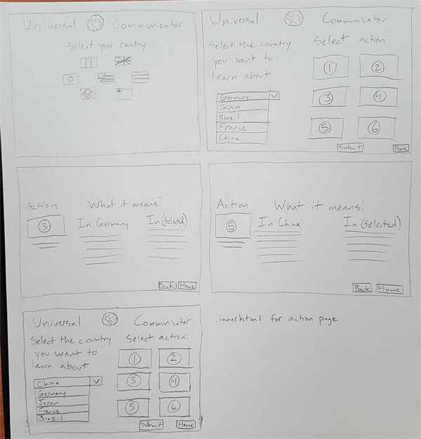
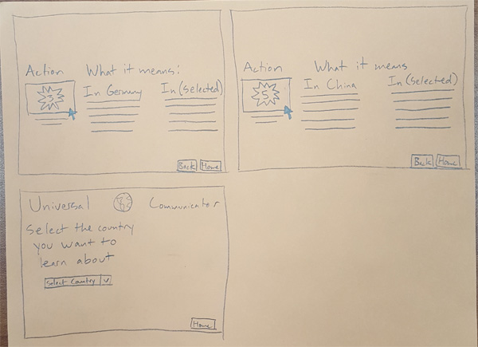
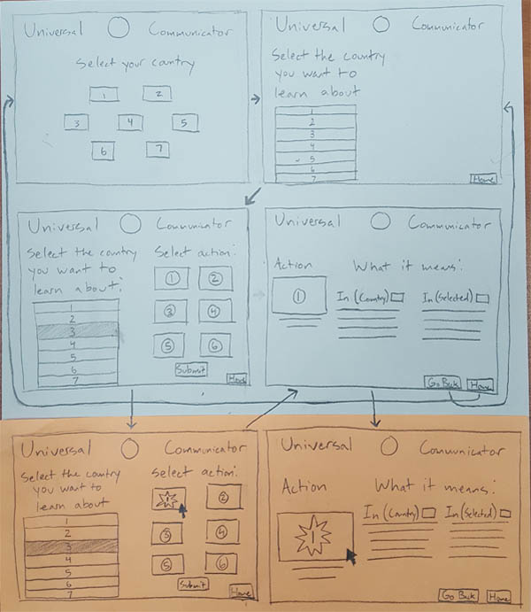

The first paper prototype was an introduction to the site, what it's function was, and how to navigate it. It starts with country selection by clicking on the flag corresponding with the country you reside in. The next page gives a drop-down menu to select another country from the list. Once a country is selected a set of 6 action images pop up, by selecting an image you are sent to a page that compares how the action is interpreted in the country you wanted to learn about and the one you reside in. Hovering over the image animates the image of the gesture. To go to a previous page, back and home buttons were added. From the review of this, it was recommended I use innerHTML to populate the actions and data after submission.
 Upon creating the second paper prototype, it was important to make the usability of the site easier. Since a limited number of countries are being used the drop-down menu was replaced with buttons that can be selected. Each button also includes the flag icons seen in the initial country selection page. When a button is selected its color changes, and action icons will animate if hovered over on the selection page as well. I believe these improvements will increase usability.
